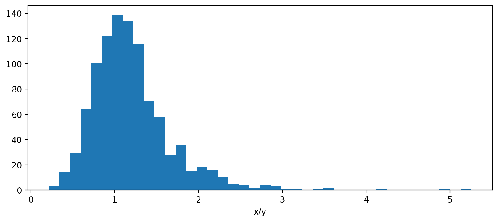

Fieller intervals in Python
Saturday June 3, 2023
Fieller's theorem provides a way to get a confidence interval for a ratio, which is hard in general. An alternative is to use the delta method to estimate the variance of the ratio and use that, but should your estimate of the ratio really be the middle of the interval?
import scipy.stats
def fieller_interval(mean_x, var_x, mean_y, var_y, alpha=0.05):
"""Confidence interval for X/Y; see arxiv.org/pdf/0710.2024.pdf"""
z = scipy.stats.norm().ppf(1 - alpha / 2)
t = z # Uses z instead of t (assumes large n)
divisor = mean_y**2 - (t**2 * var_y)
center = (mean_y * mean_x) / divisor
spread = (((mean_y * mean_x)**2 -
((mean_y**2 - (t**2 * var_y)) *
(mean_x**2 - (t**2 * var_x))) )**0.5 /
divisor)
return center - spread, center + spreadFieller's method uses its own center, which makes sense because the distribution of a ratio is skewed in general.
x = scipy.stats.norm(loc=110, scale=25).rvs(size=1000, random_state=110)
y = scipy.stats.norm(loc=100, scale=25).rvs(size=1000, random_state=100)
The estimate x.mean() / y.mean() is 1.1, which is good, but the
Fieller center is 1.5, which is a better center for the interval
because of the skewness. You can check that about the right fraction
of values are in the tails. (Jupyter notebook)
(Be sure to use the variances you care about—more likely to be variances of sample means in practice.)